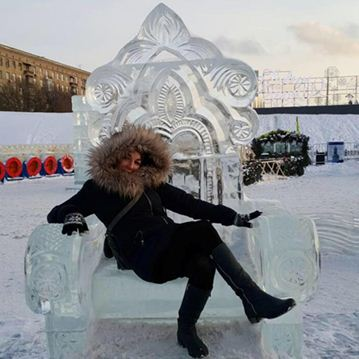
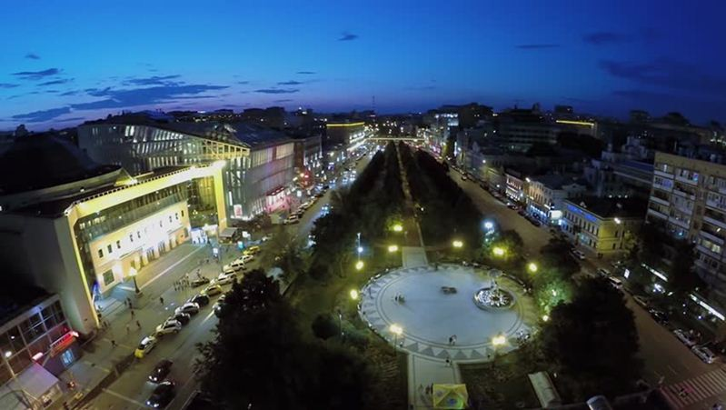
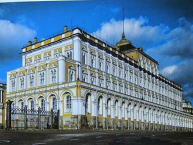

Salut cher lecteur, chère lectrice, c’est Tiffany ! Je vous retrouve dans un premier article qui me tient vraiment à cœur.
Quand je dis aux gens que je vis en Russie depuis plus d’un an et demi, il y a deux réactions :
La première réaction : « Waouh c’est génial ! J’ai toujours rêvé d’y aller, je veux venir te voir. » Vous êtes d’accord pour dire que c’est sympa ?
Puis, il y a la seconde réaction : « Mais ça va pas, t’es complètement folle ! » La réponse qui s’impose, vous serez encore d’accord avec moi, c’est : POURQUOI ? Pourquoi tu penses que je suis folle de vivre en Russie ?
La réponse qui revient très souvent c’est : la SÉCURITÉ.
En effet, on peut penser que la Russie est un pays dangereux, en partie « grâce » aux médias. Et si je vous disais que je ne me suis jamais sentie autant en sécurité qu’en Russie ? Vous me croiriez ?
Je vais vous donner deux raisons pour lesquelles pour moi la Russie n’est pas un pays dangereux. Je ne vais pas vous parler de chiffres et de statistiques, mais simplement de mon ressenti, de mon expérience.
Premier point : le respect de la femme. Peut-être que vous êtes au courant, les femmes russes sont incroyablement belles. Elles le savent et elles en « jouent ». Elles s’habillent très sexy, en mini robe, jupe, short. Elles ont de magnifiques cheveux blonds, très longs…
Et donc, me direz-vous ? Je n’ai jamais vu aucun homme siffler une femme dans la rue. Jamais, je n’ai vu un homme suivre une femme sur 100 mètres pour lui demander son numéro de téléphone.
Ça va même plus loin car les hommes russes vont jusqu’à porter le sac à main de leur femme dans la rue. Ne me demandez pas pourquoi, je ne sais pas. Et vraiment, je n’ose pas demander. Ahah !
En tant que femme en Russie, je ne me sens jamais mal à l’aise. Aucun regard insistant sur moi parce que je porte une robe. Croyez-moi, c’est un vrai confort pour une femme.
Qu’en pensez-vous, vous, les femmes françaises ou francophones ? Est-ce que cela vous touche, comme cela me touche ? Et vous, les hommes français ou francophones, qu’en pensez-vous ? Je suis consciente de (peut-être) toucher un point sensible…
Venons-en au deuxième point : L’amour des Russes pour la France et les Français.
Hé oui, les Russes aiment la France, et je vais vous illustrer leur amour avec trois souvenirs (parmi tant d’autres…).
Le premier souvenir : J’étais en Russie, à Moscou depuis seulement deux jours. Un homme m’a interpellé dans la rue, je pense qu’il m’a demandé son chemin mais je n’ai rien compris. Lui, par contre, a bien compris que j’étais française et… il a chanté la Marseillaise. Il a chanté la Marseillaise au milieu de Tsvetnoy boulevard, en pleine journée !!! Pour ceux qui ne connaissent pas ce boulevard, il est très très passant.
C’était incroyable ! Imaginez-vous arriver dans un pays étranger depuis seulement deux jours. Vous êtes complètement paumé, et là un homme vient vous demander son chemin ? La panique !! « Ah mais je comprends rien, pourquoi il me demande ça à moi ? On est plus d’une centaine sur ce trottoir… Pfff !» Et pourtant, quelle rencontre incroyable car cet homme vous chante son amour pour votre pays !
Le second souvenir : J’étais au palais du Kremlin pour assister à un ciné concert. Un jeune couple me demande de les prendre en photo. Je m’exécute avec plaisir, j’essaie de discuter un peu et ils remarquent mon accent. Quand ils ont appris que j’étais française, ils ont explosé de joie. L’homme m’a serré dans ses bras. Ils m’ont dit, avec beaucoup d’émotion, qu’ils aimaient la France, Paris, Arsène Lupin… Jamais, je n’oublierai ce moment.
Imaginez-vous en train d’attendre pour assister à un ciné concert. Vous êtes seul, vous vous demandez : « est ce que je vais comprendre ne serait-ce qu’un seul mot durant le spectacle. J’aurais mieux faire de rester chez moi et regarder des trucs sur Netflix. » et vous finissez par être submergé par de l’amour sincère… Extraordinaire !
Et le troisième souvenir. Celui qui me touche le plus, si c’est possible, car les deux premiers souvenirs sont déjà merveilleux. C’était le lendemain des attentats de Paris, j’étais à la caisse d’un magasin. Le directeur la boutique a dû entendre à mon accent que j’étais française, il est venu me voir. Il m’a demandé comment j’allais, il m’a dit avec émotion que les russes étaient les amis des français, qu’ils partageaient notre peine…
Vous savez en écrivant ces mots, mes yeux se remplissent de larmes et mon cœur déborde de reconnaissance et d’amour. Je me souviens, je me sentais tellement perdue et seule ce jour-là. Un russe m’a tendu la main, il a partagé ma peine et jamais, jamais je ne l’oublierai.
Alors je vous pose la question ?
Comment vous sentiriez vous dans un pays où les femmes sont respectées ? Comment vous sentiriez vous dans un pays où les habitants vous regardent avec des yeux qui brillent et qu’ils vous donnent leur cœur parce que vous êtes Français ? Vous vous sentiriez en insécurité ?
Si vous deviez ne retenir qu’une seule chose, c’est qu’en voyageant en Russie, ce n’est pas de l’insécurité que vous y trouverez, c’est de l’amour, et c’est tout ce que je vous souhaite.
Je vous remercie chaleureusement de m’avoir lu. Ce premier article était très important pour moi. J’ai tellement reçu de la part des Russes que j’ai à cœur de leur donner en retour.
J’espère sincèrement que vous avez trouvé de la joie à lire ces quelques mots.
En attendant notre prochain rendez-vous, je vous encourage à rester curieux du monde qui vous entoure.
Partager cette page